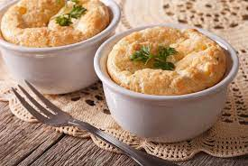

Suflê de palmito

Ingredientes
- 2 dentes de alho
- 1 colher (sopa) de azeite
- 3 palmitos em rodela
- 2 colheres (sopa) de amido de milho
- 200 ml + 100 ml de leite
- 2 colheres (sopa) de queijo muçartela ralada
- 2 latas de creme de leite
- 3 gemas
- 3 claras em neve
- Sal, pimenta e nós moscada QB
Modo de preparo
- Refogar o alho no azeite, adicionar o palmito e 200 ml do leite e deixar ferver.
- Diluir o amido no restante do leite e acrescentar à mistura da panela. Mexer até engrossar.
- Desligar o fogo e acrescentar o queijo, o creme de leite e as gemas, misturando bem.
- Incorporar as claras em neve delicadamente e por fim ajustar os temperos.
- Assar em fôrma untada a 180º C até dourar. Servir a seguir.
Observação
Não sei de onde veio essa receita.